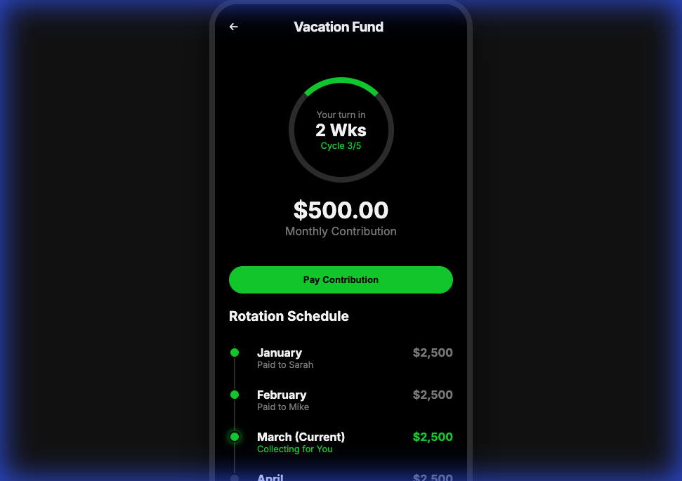
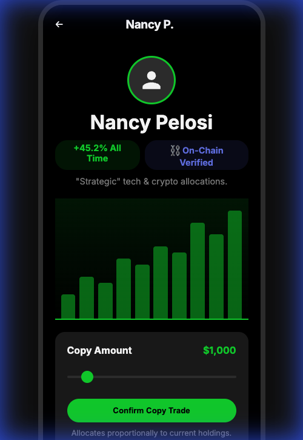

I found out about the Block builder fellowship on twitter, and it was a good chance to do some ideation without the burden of a client project or specific deliverable. So, this post answers the question: how would I push fintech boundaries with AI?
I’ll attempt to combine the ancient with the modern and intend to prototype after writing this.
For the ancient, I'll stick to 2 of the basic pillars of personal finance: savings and investments. For the modern, we see that with Generative AI, user interfaces - which traditionally were constrained to a defined structure, and designed for the most general use cases - can be personalized and morph on demand per need.
A great example of this ancient and modern combination? Ride-sharing. Interestingly, rides have been shared in sub-Saharan Africa long before Uber, as an adaptation to the economy, and meeting the need for privately owned public transportation services beyond mass transit. The killer combination was pairing this behavior with mobile technology that made it scale.
With that intro, here are some fintech features that make sense for Cash App.
Rotational Savings: Ajo/Esusu
Esusu or Ajo is a trust-based informal group savings program where members regularly contribute fixed sums to a common fund. In this system, the group selects one member to receive all the pooled money until the next contribution period, which may vary from daily to weekly or even monthly.
Rotational savings and credit would be the formal category for this offering. This contribution, common fund management and payout system will be orchestrated on demand by cash app to improve savings and make it more reliable than just trust.
A variation of this pool for a long term goal could also be set up. A specific use case I had thought of was friends “getting a trip out of the group chat.” In the time since I started ideating, CashApp has launched a “Pool” feature, meaning this was a no brainer.
 Screenshot showing the rotation schedule and contribution status. Users can clearly see when it's their turn to receive the lump sum.
Investment: Aping Trades
One of the barriers for people taking financial action is lack of knowledge of what assets to select. More people would trade if they could copy trades of people they trust, but in ratios they could handle.
For example, aping Nancy Pelosi’s portfolio in a fractional manner.
Providing an an easy way to do this for equities and crypto in Cashapp’s sleek minimalist UI, would be really nifty.

Screenshot showing the copy-trading interface. Users can easily allocate funds to copy the portfolio of top investors.